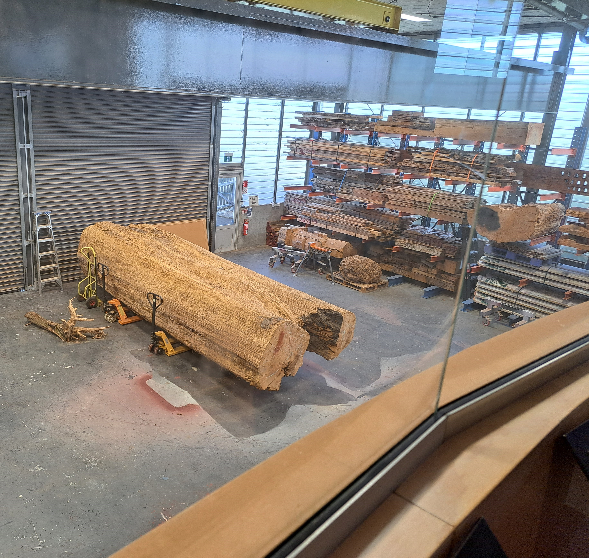

Our traditional Maori explanation of Te Whakarewarewa Geothermal
Valley states that this place was one of the area's 'Te Pupu' and
'Te Hoata', the Goddesses of Fire, emerged from the earth's core
while trying to find their brother Ngātoro-i-rangi, who was stranded
on Mount Tongariro. As they rose to the surface looking for their
brother, they left part of the fire they carried, creating geysers,
hot springs and mud pools, creating the geothermal activity that
remains today.
The mud pool is the result of acid gases and steam
that cause the decomposition of minerals (feldspars) to form a clay
called kaolin. Kaolin is white when pure, but finely divided black
sulphur turns it to grey.
The activity varies with the amount of rainfall, but the temperature
of the steaming bursts of mud is approximately 90-95 degrees Celsius
(194-203 degrees Fahrenheit).
Our main geyser is called “Pohutu” which means
“Big splash” and erupts up to heights of 30 meters. Pohutu is
semi-predictable, as she plays 15-20 minutes after another of our
active geysers. According to Maori culture, geysers are viewed as
gifts from the gods.
To the left of Pohutu (when viewing from the bridge) is the
“Prince of Wales Feathers” Geyser - named after Prince Edward Albert
visited here in the 1900's. It was traditionally named the “Tohu” or
sign as it usually plays 10 mins before and then simultaneously with
Pohutu and reaches heights of up to seven metres (almost 23 feet).

Te Puia's Kiwi Conservation Centre provides an
unparalleled experience with our national treasures.Witness live,
active Kiwis in their nocturnal enclosure, observe their foraging
behaviours, explore their history, and discover our conservation
initiatives.
Since the first intake at Te Wānanga Whakairo, many
young Māori from iwi (tribes) throughout New Zealand have been
taught the Māori practice of wood carving under the expert
guidance of master carvers who were once trainees at the school.